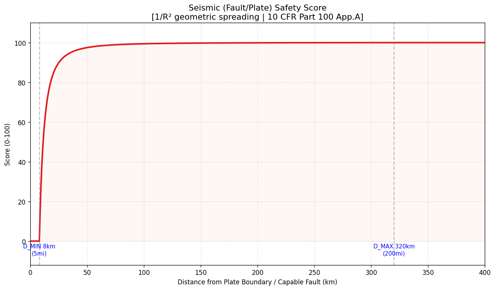
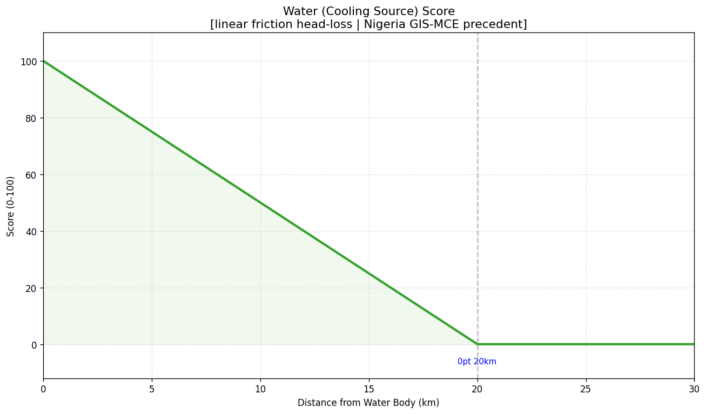
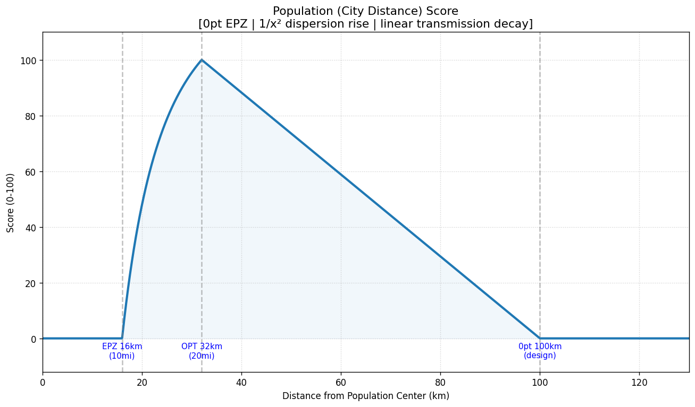
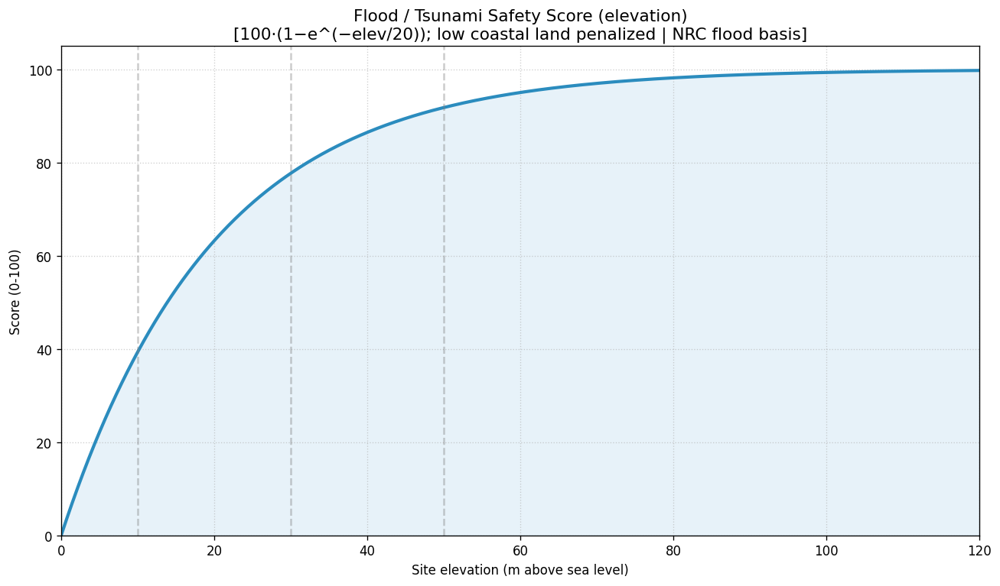
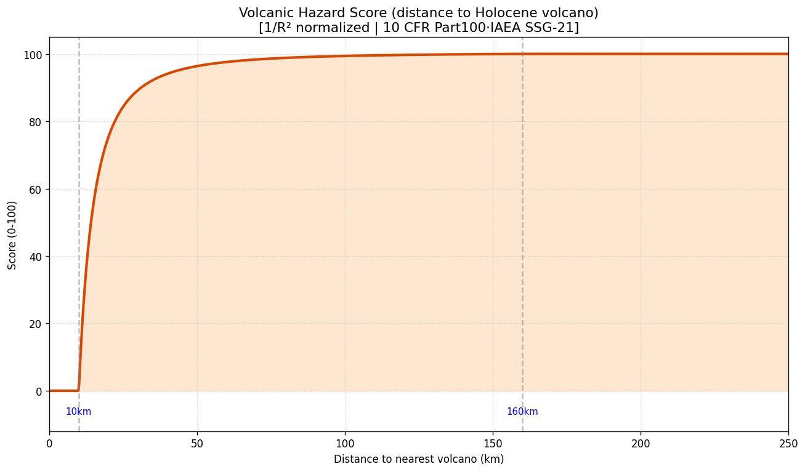
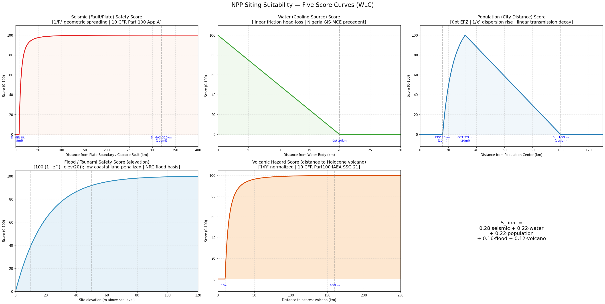
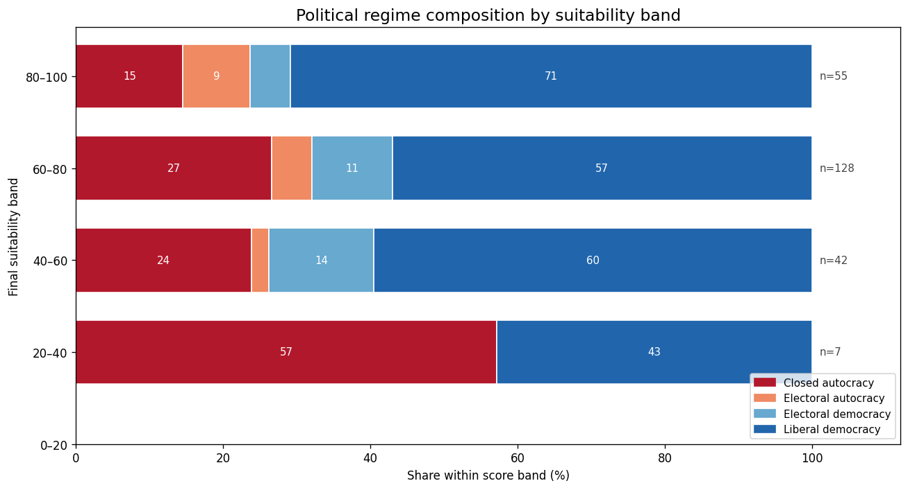
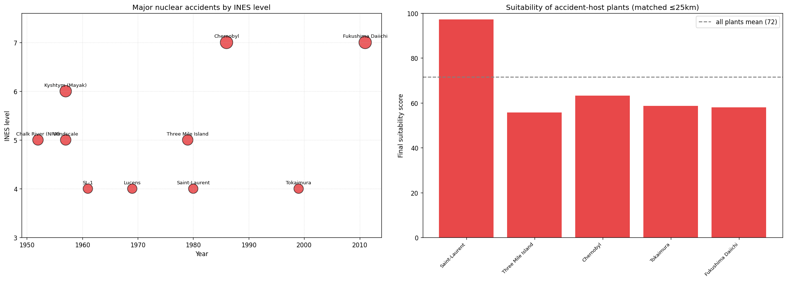
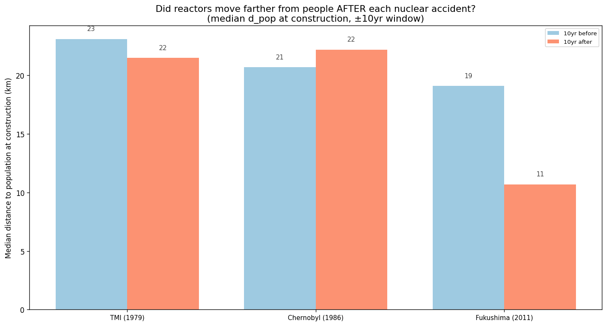
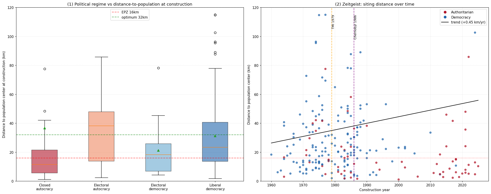

KAIST 디지털역사학입문 2026년도 1학기 · 디지털 역사 프로젝트
전 세계 233기 원자력 발전소의 실제 입지를 지진·수원·인구·홍수·화산의 다섯 잣대로 채점하고, 그 점수가 시대와 정치체제에 따라 어떻게 갈리는지를 분석한다.
아래로 스크롤 ↓
원자력 발전소는 임의의 장소에 건설할 수 없다. 지진이 잦은 단층, 냉각수가 없는 내륙, 인구가 밀집한 도심, 침수에 취약한 저지대, 분화 가능성이 있는 화산은 모두 회피해야 할 조건이다. 그렇다면 실제로 가동 중인 원전들은 과연 그러한 ‘이상적인 자리’에 위치하는가?
이 프로젝트는 이 물음을 두 단계로 검증한다. 첫째, 다섯 가지 안전·경제 요소로 전 세계 모든 지점의 입지 적합도를 점수화하고 각 원전이 실제로 몇 점의 토지 위에 서 있는지를 계산한다. 둘째, 그 점수가 무작위가 아니라 해당 국가의 정치체제와 건설 시기에 따라 체계적으로 갈린다는 사실을 보인다.
원전 입지의 핵심 조건을 거리와 고도의 함수로 0~100점으로 환산하였다. 모든 기준선과 곡선의 형태는 임의로 정하지 않고 미국·국제 규제와 학술 근거에 따랐다.

원전을 위협하는 가장 큰 자연재해는 지진이다. 활성 단층이나 판 경계에서 멀어질수록 지반이 받는 진동은 빠르게 약해진다. 이에 단층 8km 이내는 0점, 320km 이상은 100점을 부여하고, 그 사이는 지진 에너지가 거리의 제곱에 반비례해 감쇠한다는 원리(체적파 기하확산)에 따라 곡선으로 연결하였다.
근거 — 8km(5마일)·320km(200마일)는 미국 원자력규제위원회 10 CFR Part 100 부속서 A의 단층조사 기준거리이며, 역제곱 감쇠는 지진학의 기하확산 이론으로 Boore–Atkinson(2008)이 실증적으로 뒷받침한다.

원자로는 지속적인 냉각수 공급을 필요로 한다. 강·호수·바다에 가까울수록 유리하나, 도수관이 길어질수록 마찰로 잃는 에너지가 거리에 비례해 증가한다. 이에 수변(0km)은 100점, 20km를 초과하면 0점으로 두고 그 사이는 직선으로 감소시켰다.
근거 — 20km 냉각수 버퍼는 나이지리아 GIS 입지연구(Eleruja et al., 2020)의 기준이며, 직선 감소는 관 길이에 비례하는 마찰 손실(Darcy–Weisbach)에 따른다.

인구에 지나치게 가까우면 사고 시 위험이 크고, 지나치게 멀면 송전 손실이 증가한다. 이에 방사능 누출 시 영향권인 비상계획구역(EPZ) 반경 16km 이내는 0점, 인구밀도 평가 기준거리인 32km에서 100점에 이른 뒤 그보다 멀어지면 다시 완만히 감소하도록 설계하였다. 16~32km 구간의 상승 곡선은 대기 중 방사능 농도가 거리의 제곱에 반비례해 희석된다는 가우시안 확산 모델에 따랐다.
근거 — 16km(10마일) EPZ는 10 CFR 50.33(g), 32km(20마일)는 NRC 규제지침 4.7, 역제곱 확산은 NRC 규제지침 1.145(이상화한 근사)에 근거한다.

물에 가깝다는 사실만으로는 충분하지 않다. 2011년 후쿠시마가 보여주듯, 해발이 낮은 해안 저지대는 침수와 해일에 직접 노출된다. 이에 고도가 높을수록 안전 점수를 부여하되 해수면 부근에서 급격히 낮아지도록 하였다. 이 잣대는 ②번 수원 점수와 맞물려 ‘물에 가깝되 지나치게 낮지 않은’ 입지를 최적으로 만든다.
근거 — NRC 홍수설계기준(10 CFR 100.21·Part 100 부속서 A), 후쿠시마 쓰나미 처오름(약 13–15m), GIS 입지연구의 고도 기준. 데이터: ETOPO 2022 전지구 표고모델.

활화산 역시 간과할 수 없다. 화쇄류와 라하르는 수십 km, 화산재는 수백 km까지 영향을 미친다. 이에 가장 가까운 (홀로세) 화산이 10km 이내이면 0점, 160km 이상이면 100점을 부여하였다.
근거 — 10 CFR Part 100.23 및 IAEA 안전지침 SSG-21(화산 위해 평가). 데이터: 스미스소니언 GVP 홀로세 화산 1,215곳.
다섯 점수를 통합하기 위해 각 점수에 비중을 곱하여 합산하는 가중선형결합(WLC)을 사용하였다. GIS 기반 입지 평가에서 가장 널리 쓰이는 표준 방법이다.
안전을 가장 중요하게 보아 지진에 0.28, 수원과 인구에 각 0.22, 홍수에 0.16, 화산에 0.12의 비중을 두었다. (엄밀히는 전문가 쌍대비교(AHP)로 도출하는 것이 정석이며, 이 프로젝트에서는 합이 1이 되는 예시 비중을 사용하였다.)
한 가지 원칙을 적용하였다. 위험에 지나치게 근접한 지점은 이미 해당 항목 점수가 0이 되어 자동으로 감점되므로, 별도의 ‘실격 처리’를 추가하지 않았다. 동일한 위험을 점수와 실격으로 두 번 차감하는 이중 감점을 피하기 위함이다.

점수 계산에 사용된 세 가지 지리 정보를 지도에 중첩하였다. 아래 항목으로 인구밀도·지진대·수원을 켜고 끄며 확인할 수 있다. 노란 점은 실제 원자력 발전소이다.
다섯 점수를 합산한 최종 적합도를 전 세계 육지에 시각화하였다(색의 편중을 막기 위해 육지 내 백분위로 재배치 — 초록에 가까울수록 적합, 빨강에 가까울수록 부적합). 그 위에 실제 원전을 점으로 표시하였다. 점을 클릭하면 해당 원전의 다섯 점수, 건설 당시 정치체제, 그리고 입지 사유를 출처와 함께 확인할 수 있다.
이제 점수를 여러 역사적 변수와 교차한다. 이 지점에서 이 프로젝트의 핵심 발견이 드러난다.

적합도 점수 구간별로 어떤 정치체제가 건설하였는지를 구분하면 뚜렷한 경향이 나타난다. 점수가 가장 낮은 구간(20–40점)은 57%가 폐쇄적 독재 국가의 건설인 반면, 가장 높은 구간(80–100점)은 71%가 자유민주주의 국가의 건설이다.

키시팀·윈드스케일(1957), TMI(1979), 체르노빌(1986), 후쿠시마(2011) 등 주요 사고가 발생한 원전의 평균 적합도는 66.6점으로 전체 평균(71.6점)보다 낮다. 특히 후쿠시마는 해안 저지대에 위치하여 ‘홍수’ 점수가 낮았는데, 이는 본 모델이 실제 참사를 사후적으로 설명함을 보여준다.
출처 — IAEA INES 사건 등급 / Wikipedia (data/accidents.csv).

체르노빌뿐 아니라 TMI·후쿠시마를 포함하여 각 사고 전후 10년의 인구 이격거리를 비교하였다. 그러나 어느 사고 이후에도 원전은 인구로부터 더 멀어지지 않았다. TMI 이후에는 23→21km로 오히려 가까워졌고, 후쿠시마 이후에는 19→11km로 더욱 가까워졌다. 사고가 주는 ‘위험사회’ 신호보다 ‘누가 건설하는가’가 입지를 훨씬 강하게 규정한 것이다.
출처 — IAEA INES 연표(data/accidents.csv), 검정은 Mann–Whitney. 원폭(1945)은 민간 원전이 1954년 이후에 등장하여 사전/사후 비교가 불가능하므로 맥락으로만 표시.
두 가설 중 하나는 무너지고 하나는 강화되었다. 먼저 시대상 가설은 기각되었다. 체르노빌 이후 오히려 원전은 인구에 더 가까워졌으며(중앙값 15.9km), TMI·후쿠시마 이후에도 동일하였다. 이는 ‘누가 건설하는가’가 달라졌기 때문이다. 사고 이후 서구 민주국가는 건설을 중단하였고, 그 공백을 중국 등 아시아 권위주의·고성장 국가가 메웠다(체르노빌 이후 권위주의 건설 비중 16%→52%).
반대로 정치체제 가설은 강하게 지지되었다(p=0.0003). 권위주의 국가는 인구중심까지 중앙값 13km (59%가 16km 이내)로 사람 가까이에, 민주주의 국가는 23km로 더 멀리 입지시켰다. 반대를 통제할 수 있는 국가는 효율(수요·노동력·계획도시)을 위해 사람 곁을 택하였고, 시민의 반대(NIMBY)에 직면한 국가는 멀리 밀려난 것이다.

이 그래프가 프로젝트의 핵심 증거다. 왼쪽은 건설 당시 정치체제별로 원전이 인구중심에서 얼마나 떨어져 있었는지를 상자그림으로 보여준다. 가장 왼쪽의 폐쇄적 독재 국가는 중앙값이 약 13km로 붉은 EPZ(16km) 경계 아래에 머물러, 건설된 원전의 절반 이상이 방사능 영향권 안에 들어섰다. 오른쪽으로 갈수록, 즉 체제가 민주적일수록 상자가 위로 올라가 자유민주주의 국가는 중앙값이 약 23km로 ‘최적’(녹색 32km)에 가깝다. 두 집단의 차이는 통계적으로 분명하다(p=0.0003).
오른쪽은 건설 연도에 따른 입지 거리의 산점도다. 붉은 점(권위주의)과 파란 점(민주주의)이 뒤섞여 있고, 검은 추세선은 거의 평평하다. TMI(1979)·체르노빌(1986)을 가리키는 점선을 지난 뒤에도 점들이 위로 올라가지 않는다는 점이 핵심이다. 다시 말해 시간이 흐르거나 대형 사고를 겪은 뒤에도 원전이 사람에게서 더 멀어지지는 않았다. 입지를 가른 것은 ‘언제 지었는가’가 아니라 ‘어떤 체제가 지었는가’였다.
탐구에서 확인한 세 가지 단서도 모두 같은 결론을 가리킨다. ① 점수가 낮은 입지일수록 권위주의가 건설하였고, ② 사고는 그 낮은 점수의 입지(특히 해안 저지대)에서 더 빈번하였으며, ③ 어떤 사고 이후에도 원전은 더 멀어지지 않았다.
데이터·근거 — 10 CFR Part 100·50.33, NRC 규제지침 1.145·4.7, Boore–Atkinson(2008), GEM 활성단층, GHS-POP 인구격자, ETOPO 2022 표고, 스미스소니언 GVP, Natural Earth, V-Dem(OWID), IAEA INES, SIPRI/ACA. 상세 출처와 방법론은 프로젝트 문서(scoring_references.md 등)에 정리하였다.